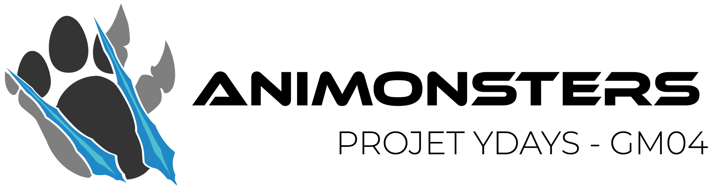

Aniphis's Monsters
Dans ce monde aux maintes possibilités, quel dresseur d'Aniphis déciderez-vous de devenir ?
Acheter leDans ce monde aux maintes possibilités, quel dresseur d'Aniphis déciderez-vous de devenir ?
jeu

Worldminders – Aniphis’s Monsters est un jeu RPG de capture et de dressage de créatures dangereuses en vue à la 3ème personne a pour but de faire voyager le joueur dans les différentes contrées ouvertes d’Aniphis en lui offrant la possibilité de réaliser ses propres choix dans un monde en constante évolution. De plus, un imposant panel de customisations du personnage, de ses créatures et de son style de jeu permet au joueur d’affirmer son style dans cet univers aux possibilités infinies. Un système de relation avec les PNJs vient s’ajouter afin que chaque aventure soit unique et inoubliable.
Le monde d'Aniphis Voir plus